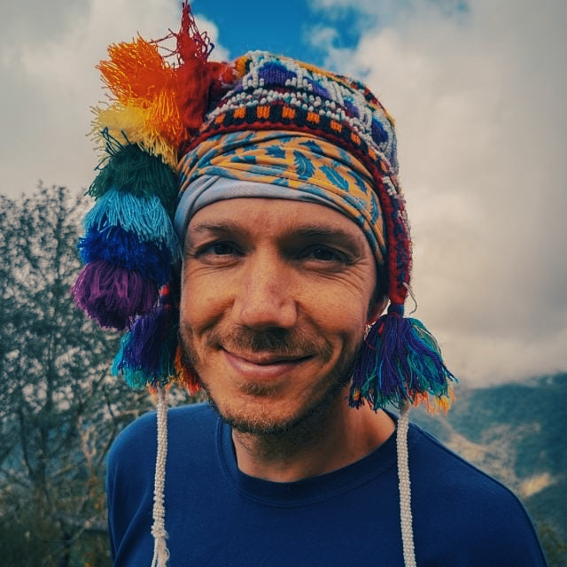

Mark Thomas - Resume

Summary
Education
- 2020-2023
MRes – Ecosystem function in regenerating tropical forest (Minor corrections).
Manchester Metropolitan University.
Supervisor: Scott Pedley
- 2018. MSc. Conservation Biology (Distinction)
Manchester Metropolitan University.
Thesis title: “Testing different diversity metrics on a naturally species-poor habitat to understand how well they can predict species response to degradation”.
Supervisor: Scott Pedley
Work experience
- Jan 2023/ Current
- Field-assistant - Spectacled Bear project ACCA, Peru
- Provide support to the project, field-work, and data analysis,
- In charge of pasante programme (mentoring and management),
- Jan 2022/ Jun 2022
- Ugalde Fellowship – Movement ecology of King Vultures Osa Conservation, Costa Rica
- Caught and GPS tagged 7 King Vulture’s
- Analysed existing GPS data of King Vulture’s and Greater yellow-headed vulture’s movement ecology in Peru
Skills